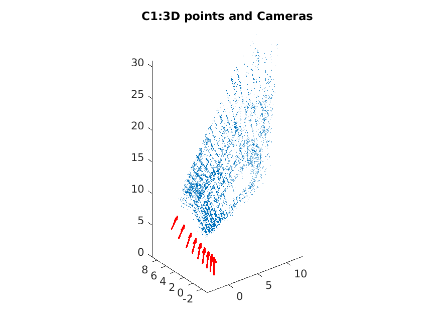
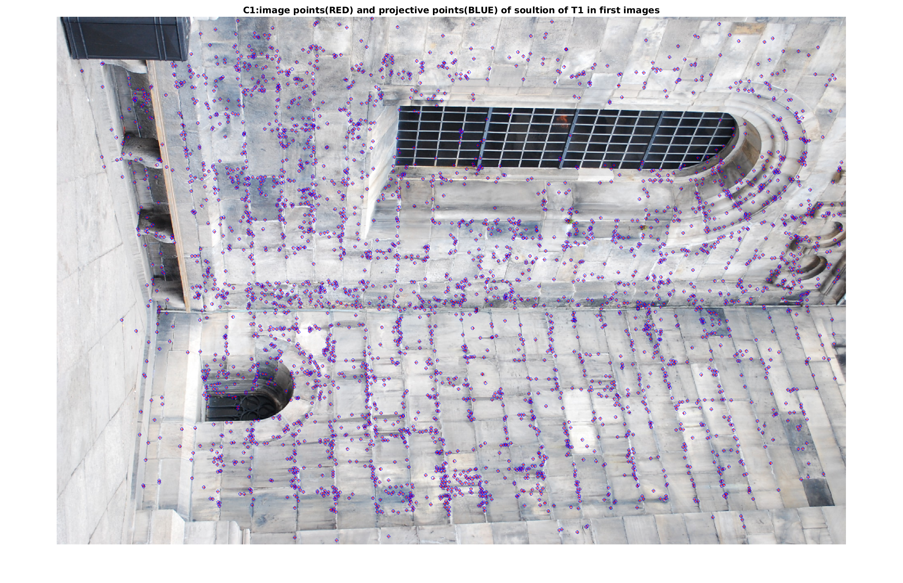
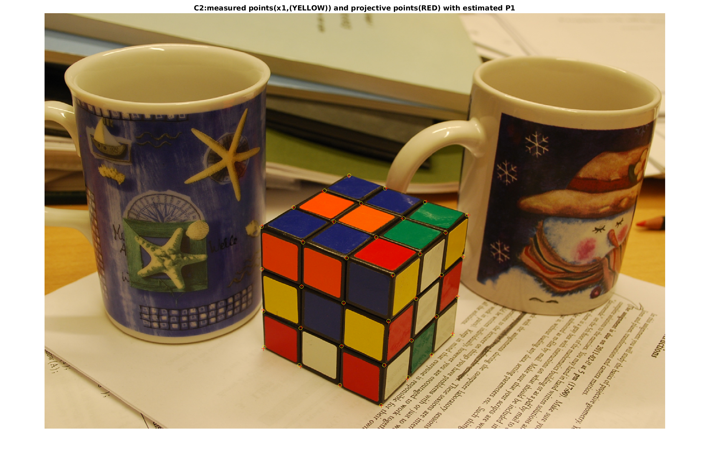

For estimated points X in 3D space and camera P, the projtective points in P is:
λx=PX
For any projective transformation T of 3D space to X, we have:
λx=PX=PT−1TX=(PT−1)(TX)
Then PT−1 can be regared as a new camera and X′=TX as the new reconstruction. This means that given a soultion we can apply any projective transformation to the 3D points and obtain a new solution.
Computer Exercise 1
code file "run1.m" is for this task.
(1)
Plot the 3D points of the reconstruction.
No, the physical properties doesn't look realistic.

(2)
Plot the image, the projtective points and the image points in the same figure.
(Here I plot the first image)
Red '+' are projtective points from 3D points X. Blue 'o' are image points from x
These points are matched very well.
(3)
The 3D points has been streched and rotated. Solution of T2 looks more reasonable now. T1X with cameras.
T2X with cameras.
(4)
Project T1X and T2X into new corresponding cameras. (Here we still choose the first view. Red '+' are projtective points from TiX). From the ploted images, the projections and the image points align for the new reconstructions so well. T1X projtective points

T2X projtective points
Theoratical exercise 2
(1)
When we normalized the image coordinates using K−1, then the problem becomes that of finding normalized cameras [R∣t] and 3D points X such that：
λx=(R∣t)X
where R is a rotation matrix. Given a solution [R∣t] and X, we can try to apply same transformation as exercise 1. However when multiplying [R∣t] with T, the result does not have a rotation matrix in the first 3x3 block. To achieve a valid solution T should be a similarity transformation.
T=(sQ0v1)−1X
Where Q is a ritation. Then we get:
sλx=(R∣t)(sQ0v1)−1X˜=(RQ∣s1(RV+t))X
which is a valid solution since RQ is a rotaion. Hence, we do not have the same distrtion since similarity transformations preserve angles and parallel lines. But there is still similarity ambiguity to the reconstruction.
3 Camera Calibration
Theoratical exercise 3
(1)
Because T∗T−1=I, we can esaIly verify it like:
(3)
The geometric interpretation of the transformations A and B is to
move a point (x,y) by adding vercotr (−x0,−y0) (what B does.), then scale it with factor 1/f in both x and y directions( what A does.).
(4)
The interprtation of this operation is to conver the points from sensor coordination system back to image coordination system. The principal point (x0,y0) ended up at (0,0,1) . A point with distance f to the pricipal point ended up at a cycle whoes center is at (0,0,1) and radius is 1.
(5)
We can get K−1:
K−1=1/4000001/4000−1−0.751
So the normalize points are:
(0,300)∼(−1,0,1)
(800,300)∼(1,0,1)
Let A denotes (−1,0,1), B denotes (1,0,1),θ denotes the angle of two viewing rays:
θ=arcos(∥A∥∥B∥A⋅B)=2π
(6)
For camera [R∣t], assuming its center is C, then we have:
[R∣t]C=0
Now, for camera K[R∣t], apply it to C, we have:
K[R∣t]C=K([R∣t]C)=K0=0
So camera K[R∣t] has same camera center as camera [R∣t].
As for the principal axis of camera [R∣t], we have
We can notice that the last row of P still same as R, thus
the solution for P33X=(0,0,1)T is same as above. So, both camera (normalzed or not) have the same principle axis.
Let w denotes ΣVTv, then wT=vTVΣT.
With (5) above:
∥Mv∥2=wTw=∥w∥2=∥ΣVTv∥2
When if ∥v∥2=1, then :
∥VTv∥=(VTv)T(VTv)=vTVVTv=vTv=∥v∥2=1
(3)
From (2), we get
∥v∥2=1min∥Mv∥2=∥v∥2=1min∥ΣVTv∥2.
Let w denotes VTv, because v is an unit vector, and V is orthogonal, so w is a unite vector. Thus:
∥v∥2=1min∥ΣVTv∥2=∥w∥2=1min∥Σw∥2
So, ∥v˜∥2=1min∥ΣVTv˜∥2 gives the same minimal value as ∥v∥2=1min∥Mv∥2.
And because ∥Mv∥2=∥M(−v)∥2, ∥v∥=∥−v∥, there are at least two solutions to these problems.
(4)
If M has SVD then:
MTM=(USVT)T(USVT)=VSTUTUSVT=VSTSVT
Since STS is a diagnoal matrix this menas that V diagonalizes MTM and therefore STS contains the eigenvalues and V contains the eigenvectors of MTM. The diagonal elements of STS are ordered decreasingly. Thus to find an eigenvector corresponding to the smallest eigenvalue we should select the last column of V.
Estimate camera. The smallest singular value and ∥Mv∥ are both close to zero.
(code is in "estimate_camera_DLT.m")
(3)
The measured points and projected points are close to each other.
project X with estimated P1

project X with estimated P2
(4)
Yes, the result looks reasonable.
camera centers and principle axis with model points.
(5)
The inner parameters for the first view (camera 1, K1):
1.0e+03*2.4219-0.00680.980202.42010.6940000.0010
We cannot know that theres are the "true" parameters because we don't known the information of the physical camera. Because we know the 3D points X, to find out P, for any certain X, there is only a certain P resulting the certaion projected points as the image. So there is not ambiguity as exercise 1 which is to estimate P and X from an image at a same time.
Optional
RMS:
% all points, with normalization
eRMS_normalized =3.5712% all points, without normalization
eRMS_without_normalization =3.5716% eRMS, 7 points, with normalization.
eRMS_7ps =4.1872% eRMS, 7 points, without normalization.
eRMS_7ps_in =4.1913
Conclusion:
The eRMS decreases as the increase of the number of points. (more points higher accuracy)
as the number of points increases, the effect of normalization or not on accuracy decreases (relect by the eRMS).